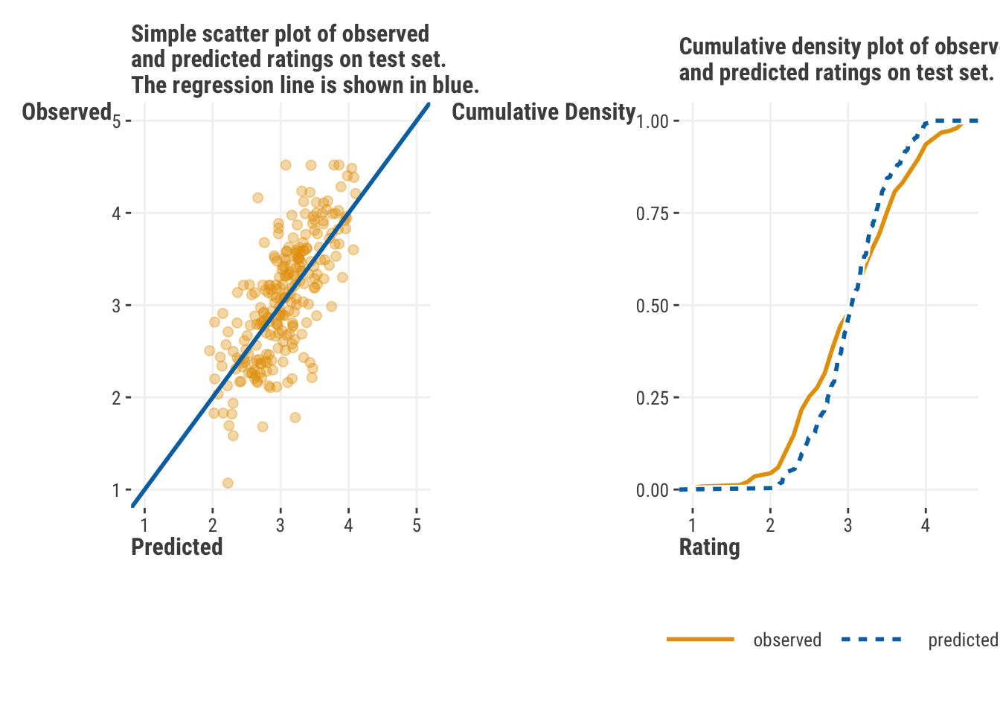
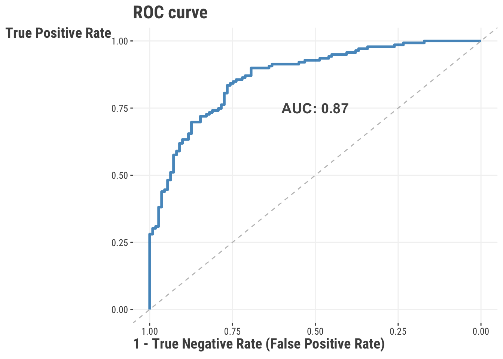
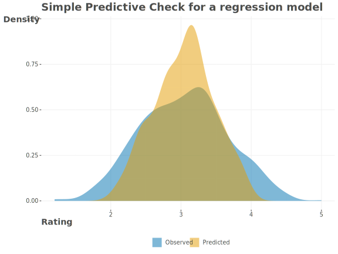

| Metric | Description | Other Names/Notes |
|---|---|---|
| Regression | ||
| RMSE | Root mean squared error | MSE (before square root) |
| MAE | Mean absolute error | |
| MAPE | Mean absolute percentage error | |
| RMSLE | Root mean squared log error | |
| R-squared | Amount of variance shared by predictions and target | Coefficient of determination |
| Deviance/AIC | Generalization of sum of squared error | Also "deviance explained" for similar R-sq interpretation |
| Classification | ||
| Accuracy | Proportion correct | Error rate is 1 - Accuracy |
| Precision | Proportion of positive predictions that are correct | Positive Predictive Value |
| Recall | Proportion of positive samples that are predicted correctly | Sensitivity, True Positive Rate |
| Specificity | Proportion of negative samples that are predicted correctly | True Negative Rate |
| Negative Predictive Value | Proportion of negative predictions that are correct | |
| F1 | Harmonic mean of precision and recall | F-Beta1 |
| AUC | Area under the ROC curve | |
| False Positive Rate | Proportion of negative samples that are predicted incorrectly | Type I Error, alpha |
| False Negative Rate | Proportion of positive samples that are predicted incorrectly | Type II Error, beta, Power is 1 - beta |
| Phi | Correlation between predicted and actual | Matthews Correlation |
| Log loss | Negative log likelihood of the predicted probabilities | |
| 1 Beta = 1 for F1 | ||
4 Understanding the Model

In addition to giving the world one of the greatest television show theme songs – Quincy Jones’ The Streetbeater – Sanford & Son gave us an insightful quote for offering criticism: “You big dummy.” While we don’t advocate for swearing at or denigrating your model, how do you know if your model is performing up to your expectations? It is easy to look at your coefficients, t-values, and an \(R^2\), and say, “Wow! Look at this great model!” Your friends will be envious of such terrific p-values, and all of the strangers that you see at social functions will be impressed. What happens if that model falls apart on new data, though? What if a stakeholder wants to know exactly how a prediction was made for a specific business decision? Sadly, all of the stars that you gleefully pointed towards in your console will not offer you any real answers.
Instead of falling in immediate love with your model, you should ask some hard questions of it. How does it perform on different slices of data? Do predictions make sense? Is your classification cut-point appropriate? In other words, you should criticize your model before you decide it can be used for its intended purposes. Remember that it is data modeling, not data truthing. In other words, you should always be prepared to call your model a “big dummy”.
4.1 Key Ideas
- Metrics can help you assess how well your model is performing, and they can also help you compare different models.
- Different metrics can be used depending on the goals of your model.
- Visualizations can further help us understand model performance in a variety of ways.
4.1.1 Why this matters
It’s never good enough to simply get model results. You need to know how well your model is performing and how it is making predictions. You also should be comparing your model to other alternatives. Doing so provides more confidence in your model and helps you to understand how it is working, and just as importantly, where it fails. This is actionable knowledge.
4.1.2 Helpful context
This takes some of the things we see in other chapters on linear models and machine learning, so we’d suggest having the linear model basics down pretty well.
4.2 Model Metrics
A first step in understanding our model can be done with summary statistics, typically called metrics. Regression and classification have different metrics for assessing model performance. We want to give you a sample of some of the more common ones, but we also want to acknowledge that there are many more that you can use, and any might be useful. We would always recommend looking at a few different metrics for any given model to get a better sense of how your model is performing.
Table 4.1 illustrates some of the most commonly used performance metrics. Just because these are popular or applicable for your situation, doesn’t mean they are the only ones you can or even should use. Nothing keeps you from using more than one metric for assessment, and in fact, it is often a good idea to do so. In general though, you should have a working knowledge of these, as you will likely come across them even if you don’t use them all the time.
4.2.1 Regression metrics
The primary goal of our endeavor is to come up with a predictive model. The closer our model predictions are to the observed target values, the better our model is performing. As we saw in Table 4.1, when we have a numeric target there are quite a few metrics that help us understand prediction-target correspondence, so let’s look at some of those.
But before we create a model to get us started, we are going to read in our data and then create two different splits within our data: a training set and a test set. In other words, we are going to partition our data so that we can train a model and then see how well that model performs with data it hasn’t seen1. For more on this process and the reasons why we do it see Section 9.4 and Section 9.6. For now, we just need to know that assessing prediction error on the test set will give us a better estimate of our metric of choice.
# all data found on github repo
df_reviews = read_csv('https://tinyurl.com/moviereviewsdata')
set.seed(123) # ensure reproducibility
initial_split = sample(
x = 1:nrow(df_reviews),
size = nrow(df_reviews) * .75,
replace = FALSE
)
df_train = df_reviews[initial_split, ]
df_test = df_reviews[-initial_split, ]import pandas as pd
import numpy as np
from sklearn.model_selection import train_test_split
# all data found on github repo
df_reviews = pd.read_csv('https://tinyurl.com/moviereviewsdata')
df_train, df_test = train_test_split(
df_reviews,
test_size = 0.25,
random_state = 123
)You’ll notice that we created training data with 75% of our data and we will use the other 25% to test our model. This is an arbitrary but common split. With training data in hand, let’s produce a model to predict review rating. We’ll use the standardized (scaled _sc) versions of several features, and use the ‘year’ features starting at year 0, which represents the earlies year observed in our data2. Finally, we also include the genre of the movie as a categorical feature.
model_lr_train = lm(
rating ~
review_year_0
+ release_year_0
+ age_sc
+ length_minutes_sc
+ total_reviews_sc
+ word_count_sc
+ genre
,
df_train
)import statsmodels.api as sm
import statsmodels.formula.api as smf
# we'll use 'features' later also
features = [
"review_year_0",
"release_year_0",
"age_sc",
"length_minutes_sc",
"total_reviews_sc",
"word_count_sc",
"genre",
]
model = 'rating ~ ' + " + ".join(features)
model_lr_train = smf.ols(formula = model, data = df_train).fit()Now that we have a model from our training data, we can use it to make predictions on our test data:
predictions = predict(model_lr_train, newdata = df_test)predictions = model_lr_train.predict(df_test)The goal now is to find out how close our predictions match reality. Let’s look at them first:

Obviously, our points do not make a perfect line on the left, which would indicate perfect prediction. Also, the distribution of our values suggests we’re over-predicting on the lower end, as none of our predictions even go below two. We’re also under-predicting on the higher end of the target’s range. More generally, we’re not capturing the range of the observed values very well. But we’d like to determine how far off we are in a general sense. There are a number of metrics that can be used to measure this. We’ll go through a few of them here. In each case, we’ll demystify the calculations to make sure we understand what’s going on.
R-squared
Anyone that has done linear regression has come across the \(R^2\) value. It is a measure of how well the model explains the variance in the target. One way to calculate it is as follows:
\[ R^2 = 1 - \frac{\sum_{i=1}^{n}(y_i - \hat{y}_i)^2}{\sum_{i=1}^{n}(y_i - \bar{y})^2} \tag{4.1}\]
where \(y_i\) is the observed value, \(\hat{y}_i\) is the predicted value, and \(\bar{y}\) is the mean of the observed values. The \(R^2\) value is basically a proportion of how much variance in the target (the denominator) is attributable to the model features in the form of the predictions (numerator). When applied to the training or observed data, it is a value between 0 and 1, with 1 indicating that the model explains all of the variance in the target.
Alternatively, \(R^2\) can be calculated as the squared correlation between the target and predicted values, which may be more conceptually intuitive. In that sense it can almost always be useful as a descriptive measure, just like we use means and standard deviations in exploratory data analysis. However, it is not so great at telling us about predictive quality. Why? Take the predictions from our rating model, and add 10 to them, or make them all negative. In both cases, if you calculate it as the squared correlation of your predictions and target, even though your predictions would be ridiculous, your \(R^2\) will be the same. If you use the formula shown, you could even get negative values! Another problem is that for training data, \(R^2\) will always increase as you add more features to your model, whether they are useful or pure noise! This is why we use other metrics to assess predictive quality.
residual_ss = sum((df_test$rating - predictions)^2)
total_ss = sum((df_test$rating - mean(df_test$rating))^2)
1 - residual_ss / total_ss
yardstick::rsq_trad_vec(df_test$rating, predictions)
# conceptually identical, but slight difference due
# to how internal calculations are done (not shown)
# cor(df_test$rating, predictions)^2
# yardstick::rsq_vec(df_test$rating, predictions)
# exercise
# cor(df_test$rating, predictions)^2
# cor(df_test$rating, predictions + 1)^2 # same
# yardstick::rsq_trad_vec(df_test$rating, predictions + 1) # negative![1] 0.5193
[1] 0.5193from sklearn.metrics import r2_score
residual_ss = np.sum((df_test.rating - predictions)**2)
total_ss = np.sum((df_test.rating - np.mean(df_test.rating))**2)
1 - residual_ss / total_ss
r2_score(df_test.rating, predictions)
# conceptually identical, but slight difference due to
# how calculations are done (not shown)
# np.corrcoef(df_test.rating, predictions)[0, 1]**2
# exercise
# np.corrcoef(df_test.rating, predictions)[0, 1]**2
# np.corrcoef(df_test.rating, predictions + 1)[0, 1]**2 # same
# r2_score(df_test.rating, predictions + 1) # negative!0.508431158347433
0.508431158347433Mean squared error
One of the most common performance metrics for numeric targets is the mean squared error (MSE) and its square root, root mean squared error (RMSE). The MSE is the average of the squared differences between the predicted and actual values. It is calculated as follows:
\[ \text{MSE} = \frac{1}{n}\sum_{i=1}^{n}(y_i - \hat{y}_i)^2 \tag{4.2}\]
MSE penalizes large errors more- since errors are squared, the larger the error, the larger the penalty. As mentioned, RMSE is just the square root of the MSE. We also saw that it as a similar metric reported in typical linear regression output (Section 3.4.2). Like MSE, RMSE also penalizes large errors, but if you want a metric that is in the same units as the original target data, RMSE is the metric for you. It is calculated as follows:
\[ \text{RMSE} = \sqrt{\text{MSE}} \tag{4.3}\]
mse = mean((df_test$rating - predictions)^2)
mse
yardstick::rmse_vec(df_test$rating, predictions)^2[1] 0.2133
[1] 0.2133sqrt(mse)
yardstick::rmse_vec(df_test$rating, predictions)[1] 0.4619
[1] 0.4619from sklearn.metrics import mean_squared_error, root_mean_squared_error
mse = np.mean((df_test.rating - predictions)**2)
mse
mean_squared_error(df_test.rating, predictions)0.20798285555421575
0.20798285555421575np.sqrt(mse)
root_mean_squared_error(df_test.rating, predictions)0.4560513738102493
0.4560513738102493Mean absolute error
The mean absolute error (MAE) is the average of the absolute differences between the predicted and observed values. It is calculated as follows:
\[ \text{MAE} = \frac{1}{n}\sum_{i=1}^{n}|y_i - \hat{y}_i| \tag{4.4}\]
MAE is a great metric when all you really want to know is how far off your predictions typically are from the observed values. It is not as sensitive to large errors as the MSE.
mean(abs(df_test$rating - predictions))
yardstick::mae_vec(df_test$rating, predictions)[1] 0.352
[1] 0.352from sklearn.metrics import mean_absolute_error
np.mean(abs(df_test.rating - predictions))
mean_absolute_error(df_test.rating, predictions)0.3704072983307527
0.3704072983307527Mean absolute percentage error
The mean absolute percentage error (MAPE) is the average of the absolute differences between the predicted and observed values, expressed as a percentage of the observed values. It is calculated as follows:
\[ MAPE = \frac{1}{n}\sum_{i=1}^{n}\frac{|y_i - \hat{y}_i|}{y_i} \tag{4.5}\]
mean(
abs(df_test$rating - predictions) /
df_test$rating
) * 100
yardstick::mape_vec(df_test$rating, predictions)[1] 12.86
[1] 12.86from sklearn.metrics import mean_absolute_percentage_error
np.mean(
abs(df_test.rating - predictions) /
df_test.rating
) * 100
mean_absolute_percentage_error(df_test.rating, predictions) * 10013.464399850975898
13.464399850975898Which regression metric should I use?
In the end, it won’t hurt to look at a few of these metrics to get a better idea of how well your model is performing. You will always be using at least one of these metrics to compare different models, so use a few of them to get a better sense of how well your models are performing relative to one another. Does adding a feature help drive down RMSE, indicating that the feature helps to reduce large errors? In other words, does adding complexity to your model provide a big reduction in error? If adding features doesn’t help reduce error, do you really need to include them in your model?
4.2.2 Classification metrics
Whenever we are classifying outcomes in a binary case, we don’t have the same ability to compare a predicted score to an observed score. Instead, we typically use the predicted probability of an outcome, establish a cut-point for that probability, convert everything below that cut-point to 0, and then convert everything at or above that cut-point to 1. We can then compare a table predicted versus target classes, typically called a confusion matrix3.
Let’s start with a model to predict whether a review is “good” or “bad”. We will use the same training and testing data that we created above. Explore the summary output if desired (not shown), but we will focus on the predictions and metrics.
model_class_train = glm(
rating_good ~
review_year_0
+ release_year_0
+ age_sc
+ length_minutes_sc
+ total_reviews_sc
+ word_count_sc
+ genre
,
df_train,
family = binomial
)
summary(model_class_train)
# a numeric version to use later
y_target_testing_bin = ifelse(df_test$rating_good == "good", 1, 0)import statsmodels.api as sm
import statsmodels.formula.api as smf
model = 'rating_good ~ ' + " + ".join(features)
model_class_train = smf.glm(
formula = model,
data = df_train,
family = sm.families.Binomial()
).fit()
# model_class_train.summary() Now that we have our model trained, we can use it to get the predicted probabilities for each observation4.
predicted_prob = predict(
model_class_train,
newdata = df_test,
type = "response"
)predicted_prob = model_class_train.predict(df_test)We are going to take those probability values and make a decision to convert everything above .5 to the positive class (a “good” review), which we can do simply by rounding, or with an if-else type of approach. It is a bold assumption, but one that we will make at first!
predicted_class = round(predicted_prob)
predicted_class = ifelse(predicted_prob > .5, 1, 0)predicted_class = predicted_prob.round().astype(int)Confusion matrix
The confusion matrix is a table that shows the number of correct and incorrect predictions made by the model. It’s easy enough to get one from scratch, but we recommend using a function that will give you a nice table, and possibly all of the metrics you need along with it. To get us started, we can use a package function that will take our predictions and observed target as input to create the basic table.
We use mlr3verse in the machine learning chapters, so we’ll use it here for our confusion matrix. Though our predictions are 0/1, we need to convert it to a factor for this function.
# we'll use the mlr3verse in the machine learning demos also
rating_cm = mlr3measures::confusion_matrix(
factor(df_test$rating_good), # requires factor
factor(predicted_class),
positive = "1" # class 1 is 'good'
)We can get an extremely rudimentary confusion matrix by using the confusion_matrix function from sklearn.metrics. We’ll use it here to get the basic table, but we’ll use a more advanced function later.
from sklearn.metrics import confusion_matrix
rating_cm = confusion_matrix(df_test.rating_good, predicted_class)| True 1 | True 0 | |
|---|---|---|
| Predicted 1 | TP: 117 | FP: 27 |
| Predicted 0 | FN: 22 | TN: 84 |
TP: A True Positive is an outcome where the model correctly predicts the positive class – the model correctly predicted that the review was good.
TN: A True Negative is an outcome where the model correctly predicts the negative class – the model correctly predicted that the review was not good.
FP: A False Positive is an outcome where the model incorrectly predicts the positive class – the model incorrectly predicted that the review was good when it was bad
FN: A False Negative is an outcome where the model incorrectly predicts the negative class – the model predicted that the review was bad when it was good.
In an ideal world, we would have all of our observations fitting nicely in the diagonal of that table.Unfortunately, we don’t live in that world, and the greater amount we have in the off diagonal (i.e., in the FN and FP spots), the worse our model is at classifying outcomes.
Let’s look at some metrics that will help to see if we’ve got a suitable model or not. We’ll describe each, then show them all after.
Accuracy
Accuracy’s allure is in its simplicity, and because we use it for so many things in our everyday affairs. It is simply the proportion of correct predictions made by the model. But accuracy can also easily mislead you into believing a model is doing better than it is. If you have any class imbalance, where one class has far more observations than the other, you can get a high accuracy by simply predicting the majority class all of the time! To get around the false sense of confidence that accuracy alone can promote, we can look at a few other metrics.
Sensitivity/Recall/True positive rate
Sensitivity, also known as recall or the true positive rate, is the proportion of observed positives that are correctly predicted by the model. If your focus is on the positive class above all else, sensitivity is the metric for you.
Specificity/True negative rate
Specificity, also known as the true negative rate, is the proportion of observed negatives that are correctly predicted as such. If you want to know how well your model will work with the negative class, specificity is a great metric.
Precision/Positive predictive value
The precision is the proportion of positive predictions that are correct, and is often a key metric in many business use cases. While similar to sensitivity, precision focuses on positive predictions, while sensitivity focuses on observed positive cases5.
Negative predictive value
The negative predictive value is the proportion of negative predictions that are correct, and is the complement to precision.
Now let’s demystify this a bit and see how we’d do this ourselves. Starting with a basic confusion matrix of counts, we’ll then extract the values to create the metrics we need.
our_cm = rating_cm$matrix
TN = our_cm[2, 2]
TP = our_cm[1, 1]
FN = our_cm[2, 1]
FP = our_cm[1, 2]
acc = (TP + TN) / sum(our_cm) # accuracy
tpr = TP / (TP + FN) # true positive rate, sensitivity, recall
tnr = TN / (TN + FP) # true negative rate, specificity
ppv = TP / (TP + FP) # positive predictive value, precision
npv = TN / (TN + FN) # negative predictive valueour_cm = rating_cm
TN = our_cm[0, 0]
TP = our_cm[1, 1]
FN = our_cm[1, 0]
FP = our_cm[0, 1]
acc = (TP + TN) / np.sum(our_cm) # accuracy
tpr = TP / (TP + FN) # true positive rate, sensitivity, recall
tnr = TN / (TN + FP) # true negative rate, specificity
ppv = TP / (TP + FP) # positive predictive value, precision
npv = TN / (TN + FN) # negative predictive valueNow that we have a sense of some metrics, let’s get a confusion matrix and stats using packages that will give us a lot of these metrics at once. In both cases we have an 0/1 integer where 0 is a rating of “bad” and 1 is “good”.
tibble(
metric = c('ACC', 'TPR', 'TNR', 'PPV', 'NPV'),
ours = c(acc, tpr, tnr, ppv, npv),
package = rating_cm$measures[c('acc', 'tpr', 'tnr', 'ppv', 'npv')]
)We find pycm to be a great package for this purpose, as practically every metric based on a confusion matrix you can think of is available. You can also use sklearn.metrics and its corresponding classification_report function.
from pycm import ConfusionMatrix
rating_cm = ConfusionMatrix(
df_test.rating_good.to_numpy(),
predicted_class.to_numpy(),
digit = 3
)
# print(rating_cm) # lots of stats!
package_result = [
rating_cm.class_stat[stat][1] # get results specific to class 1
for stat in ['ACC', 'TPR', 'TNR', 'PPV', 'NPV']
]
pd.DataFrame({
'metric':['ACC', 'TPR', 'TNR', 'PPV', 'NPV'],
'ours': [acc, tpr, tnr, ppv, npv],
'package': package_result
})So now we have demystified some classification metrics as well! Your results may be slightly different due to the random nature of the data splits, but they should be very similar to these, and should match the package results regardless.
| metric | ours | package |
|---|---|---|
| ACC | 0.804 | 0.804 |
| TPR | 0.842 | 0.842 |
| TNR | 0.757 | 0.757 |
| PPV | 0.812 | 0.812 |
| NPV | 0.792 | 0.792 |
Ideal decision points for classification
Earlier when we obtained the predicted class, and subsequently all the metrics based on it, we used a predicted probability value of 0.5 as a cutoff for a ‘good’ vs. a ‘bad’ rating, and this is usually the default if we don’t specify it explicitly. Assuming that this is the best for a given situation is actually a bold assumption on our part, and we should probably make sure that the cut-off value we choose is going to offer us the best result given the modeling context.
But what is the best result? That’s going to depend on the situation. If we are predicting whether a patient has a disease, we might want to minimize false negatives, since if we miss the diagnosis, the patient could be in serious trouble. Meanwhile if we are predicting whether a transaction is fraudulent, we might want to minimize false positives, since if we flag a transaction as fraudulent when it isn’t, we could be causing a lot of trouble for the customer, and add cost the company to deal with it. In other words, we might want to maximize the true positive or true negative rates, respectively.
Whatever we decide, we ultimately are just shifting the metrics around relative to one another. As an easy example, if we were to classify all of our observations as ‘good’, we would have a sensitivity of 1 because all good ratings would be classified correctly. However, our positive predictive value would not be 1, and we’d have a specificity of 0. No matter which cutpoint we choose, we are going to have to make a tradeoff.
Where this comes into play is with model selection, where we choose a model based on a particular metric, and something we will talk about very soon. If we are comparing models based on accuracy, we might choose a different model than if we are comparing based on sensitivity. And given a particular threshold, we might choose a different model based on the same metric, than we would have with a different threshold.
To help us with the task of choosing a threshold, we will start by creating what’s called a Receiver Operating Characteristic (ROC) curve. This curve plots the true positive rate (TPR) against the false positive rate (FPR) at various threshold settings. The area under the curve (AUC) is a measure of how well the model is able to distinguish between the two classes. The closer the AUC is to 1, the better the model is at distinguishing between the two classes. The AUC is a very popular metric because it is not sensitive to our threshold, and actually concerns two metrics we are often interested in6.
roc = performance::performance_roc(model_class_train, new_data = df_test)
roc
# requires the 'see' package
plot(roc) from sklearn.metrics import roc_curve, auc, RocCurveDisplay
fpr, tpr, thresholds = roc_curve(
df_test.rating_good,
predicted_prob
)
auc(fpr, tpr)RocCurveDisplay(fpr=fpr, tpr=tpr).plot()

With ROC curves and AUC values in hand, now we can find the ideal cut-point for balancing the TPR and FPR. There are different ways to do this, but one common way is to use the Youden’s J statistic, which we do here.
# produces the same value as before
roc_ = pROC::roc(df_test$rating_good, predicted_prob)
threshold = pROC::coords(roc_, "best", ret = "threshold")
predictions = ifelse(
predict(model_class_train, df_test, type='response') >= threshold$threshold,
1,
0
)
cm_new = mlr3measures::confusion_matrix(
factor(df_test$rating_good),
factor(predictions),
positive = "1"
)
tibble(
threshold = threshold,
TPR = cm_new$measures['tpr'],
TNR = cm_new$measures['tnr']
)# A tibble: 1 × 3
threshold$threshold TPR TNR
<dbl> <dbl> <dbl>
1 0.505 0.835 0.766cut = thresholds[np.argmax(tpr - fpr)]
pd.DataFrame({
'threshold': [cut],
'TPR': [tpr[np.argmax(tpr - fpr)]],
'TNR': [1 - fpr[np.argmax(tpr - fpr)]],
}) threshold TPR TNR
0 0.483 0.887 0.726The result is a “best” decision cut-point for converting our predicted probabilities to classes, though again, there are different and equally valid ways of going about this. The take home point is that instead of being naive about setting our probability to .5, this will provide a cut-point that will lead to a more balanced result that recognizes other metrics that are important beyond accuracy. We will leave it to you to take that ideal cut-point value and update your metrics to see how much of a difference it will make7.
Note again that this only changes the metric values relative to one another, not the overall performance of the model - the actual predicted probabilities don’t change after all. For example, accuracy may go down while recall increases. You’ll need to match these metrics to your use case to see if the change is worth it. Whether it is a meager, modest, or meaningful improvement is going to vary from situation to situation, as will how you determine if your model is “good” or “bad”. Is this a good model? Are you more interested in correctly identifying the positive class, or the negative class? Are you more interested in avoiding false positives/negatives? These are all questions that you will need to answer depending on the modeling context.
4.3 Model Selection & Comparison
Another important way to understand our model is by looking at how it compares to other models in terms of performance, however we choose to define that. One common way we can do this is by comparing models based on the metric(s) of our choice, for example, with RMSE or AUC. Let’s see this in action for our regression model. Here we will compare three models: our original model, one with a subset of three features, and the three feature model that includes interactions with genre. Our goal will be to see how these perform on the test set based on RMSE.
# create the models
model_lr_3feat = lm(
rating ~ review_year_0 + release_year_0 + age_sc,
df_train
)
model_lr_interact = lm(
rating ~ review_year_0 * genre + release_year_0 * genre + age_sc * genre,
df_train
)
model_lr_train = lm(
rating ~
review_year_0
+ release_year_0
+ age_sc
+ length_minutes_sc
+ total_reviews_sc
+ word_count_sc
+ genre
,
df_train
)
# get the predictions, calculate RMSE
result = map(
list(model_lr_3feat, model_lr_train, model_lr_interact),
~ predict(.x, newdata = df_test)
) |>
map_dbl(
~ yardstick::rmse_vec(df_test$rating, .)
)import statsmodels.formula.api as smf
from sklearn.metrics import root_mean_squared_error
# create the models
model_lr_3feat = smf.ols(
formula='rating ~ review_year_0 + release_year_0 + age_sc',
data=df_train
).fit()
model_lr_interact = smf.ols(
formula='rating ~ review_year_0 * genre + release_year_0 * genre + age_sc * genre',
data=df_train
).fit()
model_lr_train = smf.ols(
formula=
'''
rating ~
review_year_0
+ release_year_0
+ age_sc
+ length_minutes_sc
+ total_reviews_sc
+ word_count_sc
+ genre
'''
,
data=df_train
).fit()
models = [model_lr_3feat, model_lr_train, model_lr_interact]
# get the predictions, calculate RMSE
result = pd.DataFrame({
'model': ['3 features', 'original', '3 feat+interact'],
'rmse': [
root_mean_squared_error(
df_test.rating,
model.predict(df_test[features])
)
for model in models
]
})| model | rmse | % Δ RMSE1 |
|---|---|---|
| original | 0.46 | 27% |
| 3 feat+interact | 0.55 | 12% |
| 3 features | 0.63 | 0% |
| 1 % Δ is the percentage drop relative to the largest value. | ||
In this case, the three feature model does worst, but adding interactions of those features with genre improves the model. However, we see that our original model with 7 features has the lowest RMSE, indicating that it is the best model under these circumstances. This suggests that the additional features have more to add to the model. This is a simple example, but it is a very typical way to compare models that you would use frequently. The same approach would work for classification models, just using an appropriate metric like AUC or F1.
Another thing to consider is that even with a single model, the model fitting procedure is always comparing a model with the current parameter estimates, or more generally the current objective function value, to a previous one with different parameter estimates. In this case, our goal is model selection, or how we choose the best result from a single model. While this is an automatic process, the details of how this actually happens is the focus of Chapter 6. In other cases, we are selecting models through the process of cross-validation (Section 9.6), but the idea is largely the same in that we are comparing our current parameter estimates to other possibilities. We are always doing model selection and comparison, and as such we’ll be demonstrating these often.
4.4 Model Visualization
A key method for understanding how our model is performing is through visualization. You’ll recall that we started out way back by look at the predicted values against the observed values to see if there was any correspondence (Figure 3.3), but another key way to understand our model is to look at the residuals, or errors in prediction, which again is the difference in our prediction versus the observed value. Here are a couple plots that can help us understand our model:
- Residuals vs. Fitted: This type of plot shows predicted values vs. the residuals (or some variant of the residuals, like their square root). If you see a pattern, that potentially means your model is not capturing something in the data. For example, if you see a funnel shape, that would suggest that you are systematically having worse predictions for some part of the data. For some plots, patterns may suggest an underlying nonlinear relationship in the data is yet to be uncovered. For our main regression model, we don’t see any patterns that would indicate that the model has a notable issue.

- Training/Test Performance: For iterative approaches like deep learning, we may want to see how our model is performing across iterations, typically called epochs. We can look at the training and testing performance to see if our model is overfitting or underfitting. We can actually do this with standard models as well if the estimation approach is iterative, but it’s not as common. We can also visualize performance across samples of the data, such as in cross-validation. The following shows performance for a model similar to the multilayer perceptron (MLP) demonstrated later (Section 10.7), and using the same features as our other models. Here we see it get to a relatively low objective function value after just a few epochs.
- Predictive Check: This is a basic comparison of predicted vs. observed target values. In the simplest case you can just examine your predictions vs. the observed values, and that’s plenty for a quick assessment.

We may be getting ahead of ourselves to understand this completely yet, but it’s worth knowing about posterior predictive checks, which are typically used with Bayesian models, but are not restricted to that case. A proper posterior predictive check is a bit more involved, but there are packages that make it straightforward8. The basic idea is that we simulate the target based on the model parameter estimates and their uncertainty. And with that distribution of estimates (e.g. regression coefficients), we can then simulate random draws of predicted values. A step-by-step approach is as follows:
- Simulate the parameters following the assumed distribution, e.g., a normal distribution for the regression coefficients.
- For each simulated parameter set, make a model prediction.
- Repeat this process many times to get a distribution of predictions.
- Compare this distribution to the observed target distribution.
In our final step, we compare that distribution of predictions to the observed target distribution. If the two distributions are similar, then the model is doing a good job of capturing the target distribution.
This plot is ubiquitous in Bayesian modeling, but can be used for any model that has uncertainty estimates or is otherwise able to generate random draws of the target distribution. For our regression model, our predictions match the target distribution well.
- Other Plots: Other plots may look at the distribution of residuals, check for extreme values, see if there is an overabundance of zero values, and other issues, some of which may be specific to the type of model you are using.
The following shows how to get a residuals vs. fitted plot and a posterior predictive check.
performance::check_model(model_lr_train, check = c('linearity', 'pp_check'))import seaborn as sns
import matplotlib.pyplot as plt
## Residual Plot
sns.residplot(
x = model_lr_train.fittedvalues,
y = df_train.rating,
lowess = True,
line_kws={'color': 'red', 'lw': 1}
)
plt.xlabel('Fitted values')
plt.ylabel('Residuals')
plt.title('Residuals vs. Fitted')
plt.show()
## Posterior Predictive Check
# get the model parameters
pp = model_lr_train.model.get_distribution(
params = model_lr_train.params,
scale = model_lr_train.scale,
exog = model_lr_train.model.exog
)
# Generate 10 simulated predictive distributions
pp_samples = [pp.rvs() for _ in range(10)]
# Plot the distribution of pp_samples
for sample in pp_samples:
sns.kdeplot(sample, label='pp.rvs()', alpha=0.25)
# Overlay the density plot of df_train.rating
sns.kdeplot(
df_train.rating.to_numpy(),
label='df_train.rating',
linewidth=2
)
plt.xlabel('Rating')
plt.ylabel('Density')
plt.title('Distribution of predictions vs. observed rating')
plt.show()4.5 Wrapping Up
It is easy to get caught up in the excitement of creating a model and then using it to make predictions. It is also easy to get caught up in the excitement of seeing a model perform well on a test set. It is much harder to take a step back and ask yourself, “Is this model really doing what I want it to do?” It takes a lot of work to trust what a model is telling you.
4.5.1 The common thread
Much of what you’ve seen in this chapter can be applied to any model. From linear regression to deep learning, we often use similar metrics to help select and compare models.
4.5.2 Choose your own adventure
Now that you’ve gotten a grasp of how to understand the model from a general perspective, you can now focus on understanding more about how features relate to the target and make predictions. Head to Chapter 5 to find out more!
4.5.3 Additional resources
If this chapter has piqued your curiosity, we would encourage you to check out the following resources.
Even though we did not use the mlr3 package in this chapter, the Evaluation and Benchmarking chapter of the associated book, Applied Machine Learning Using mlr3 in R, offers a great conceptual take on model metrics and evaluation.
For a more Pythonic look at model evaluation, we would highly recommend going through the sci-kit learn documentation on Model Evaluation. It has you absolutely covered with code examples and concepts.
For anyone comparing Python to R results, the data splits are not the same so outputs likewise will not be identical, though they should be very similar. We could have forced them to use the same data, but we feel you should get used to the randomness of the process.↩︎
See Section 13.6.2 for more on why we like to start year features at 0.↩︎
The origin of the term “confusion matrix” is a bit muddled, and it’s not clear why it’s not just called a classification table/matrix (as it actually is from time to time). If you call it a classification table, probably everyone will know exactly what you mean, but if you call it a confusion matrix, probably few outside of data science (or domains that use it) will know what you’re talking about.↩︎
Machine learning libraries in Python based on the scikit-learn API will have a
predict_probamethod that will give you the probability of each class, while thepredictmethod will give you the predicted class. The latter typically makes the assumption that the cut-point for classification is .5.↩︎It’s not clear why people started using things like recall/sensitivity and specificity, neither of them as clear as true positive rate and true negative rate. Why anyone thought ‘precision’ was a good name for any metric is beyond us, given how many metrics could generically be called as such.↩︎
The precision-recall curve is a very similar approach which visualizes the tradeoff between precision and recall. The area under the precision-recall curve is its corresponding metric.↩︎
It is not lost on us that our R model actually chose ~ .5! 😆 But even then you can see the sight difference in TPR/TNR.↩︎
The performance package in R has a
check_predictionsfunction that can do this for you, and we used it here. Base R has asimulatefunction that can be used to generate random draws of the predictive distribution forlm/glmmodels. For Python you’ll need to use a package like arviz for Bayesian models, or write your own function for other models.↩︎